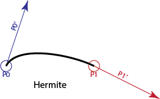

We will create complicated shapes by putting together simple pieces. We need to do this in a careful way, otherwise we won't get continuity.
If we try to make shapes out of linear pieces (line segments), we can never do better than C(0) continuity. The common thing in computer graphics is to use cubic polynomial segments. That will allow us to get C(1) (or better) continuity, and also have a lot of flexibility in the shapes that we can create.
We could use even higher degree polynomials (quartic polynomials, quintic polynomials, etc.). However, for many reasons, in computer graphics, cubics are usually sufficient.
This material is covered in the book in Sections 15.3 through 15.5, and discussed in class. So, there isn't that much to say on this page.
We write a cubic polynomial as: denoting the coefficients as - in boldface since they are points. This is a nicer notation than writing (if our points are 2d): Its useful to remember that we do have a separate function for each dimension.
Trying to control the cubic by specifying the coefficients is not easy (e.g., what values for gives a desired end position?). Therefore, we almost always specify using something more convenient - and compute the coefficients from these.
Notice that a cubic segment has 4 coefficients. When we specify the cubic in some other way, we need to give enough information to compute these 4 things. If we give too little information or too much, it won't work exactly. Therefore, other representations will use 4 numbers too.
One useful way to specify a cubic is Hermite form. Hermite forms are interpolating forms: we specify values that the curves have. With Hermite forms, we specify the values and derivatives for the curve at the beginning and end. We can have Hermite polynomials for different degrees. For example, a first degree Hermite polynomial is a line segment, where we specify the values at the ends. A quintic Hermite (5th degree) would specify the value and the first two derivatives at each end of the curve.
For Hermite Cubics (the only kind we'll use in class), we specify the value of the curve at the beginning, the value of the curve at the end, the first derivative (tangent vector) of the curve at the beginning, and the tangent vector (first derivative) of the curve at the end.

Here we denote the first point as P0, the second point as P1, and their associated derivatives as P0' and P1'.
Even though the derivatives are vectors, we still refer to them as control points. Since it is a cubic, it has 4 control points.
We can derive formulas for the coefficients (the ) from the Hermite control points. This is done in the book - but we won't ask you to do these derivations in class (it used to be part of class).
Here are the equations: Writing it out like this, it should be clear that , , etc. Since these are points (vectors) we should boldface them.
I am not sure if these equations are ever written out like this in the book. The book uses matrix notation for writing out these equations. The connection to matrix notation becomes clearer if we format the equation a little differently:
Which lets us write the equation as two matrix-vector multiplies: Note that this is one of the few times in class where I actually do a left-multiply of a row vector with a matrix.
We can re-organize the equations from the previous box to group terms by control points, rather than by parameter powers. Note that this is just the equation above, just with the terms regrouped:
Notice that we now have a function of u for each control point. We could re-write this as: These new functions are called basis functions.
Basis functions are a very convenient way to write curve equations.
Polynomial curves can be written as basis functions. Writing them this way makes it clear that we are taking a linear combination of the control points.
Sometimes, it's inconvenient to have to specify the derivatives (tangent vectors) for cubics. With a cardinal spline, we specify a set of points to be interpolated and compute the derivatives at these points as a function of other points. Specifically, for point , we set it's derivative to be a scaled version of the vector between the next and previous points, so: for some scaling factor s. For historical reasons, we talk about this scaling factor as the "tension" (t) and compute it as .
For the most common case where t=0, or s=1/2, we call these curves Catmull-Rom splines. The "Catmull" refers to Ed Catmull, who was the founder of Pixar, and invented an amazing number of things in computer graphics (many of which we will learn over the course of the semester).
Note that with a cardinal spline, to connect between two points (say p1 and p2), we need to have the points before and after these points (p0 and p3).
Cardinal splines are a simple way to create C(1) continuous, interpolating curves.
Note that we don't need to derive the equations for cardinal splines. Once we know how to compute the derivatives at each point, we can just use the equations for Hermite forms for each piece of the curve.
This introduced the basics of using cubic polynomials. Look in the book to see the details, and the derivations.
On the next page, we'll discuss arc-length parameterizations. And then on page 5 we'll move on to Bezier curves. Bezier curves can be of any degree, but we'll mainly use them as a convenient way to do cubics. For example, Canvas uses cubic Bezier curve segments.